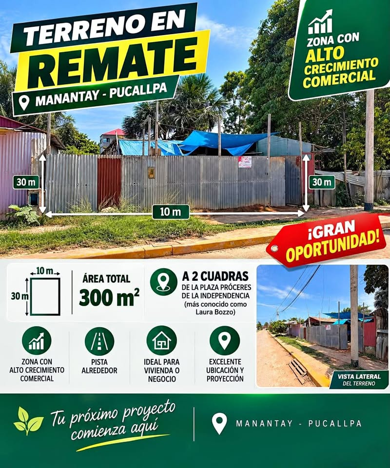

Precio desconocido 300 m²

🚨 REMATE DE TERRENO 300 M² EN PISTA A SOLO 2 CUADRAS DE LA PLAZA LAURA BOZZO – S/ 📞 [hidden information] 📍 Ubicación privilegiada: En el Jr. Los Ceticos, calle de reciente asfaltado a solo 2 cuadras de la Plaza Próceres de la Independencia (ex Laura Bozzo) y a 4 cuadras asfaltadas de la Av. Aviación, en una zona de fácil acceso y con excelente conectividad. 🏡 Características del terreno ✅ Área: 10 m de frente × 30 m de fondo = 300 m² ✅ Título de propiedad ✅ Todos los servicios básicos ✅ Ubicado en calle totalmente empistada ✅ Desde la Av. Aviación hasta el terreno, todo el acceso es por pi